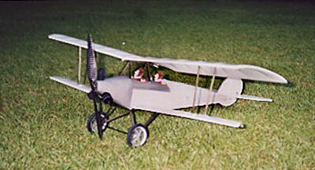

|
Here is the picture of the bellanca that I told you I would send. Sorry it took so long. I did make a few changes which made it a little lighter. It came out to 5.9 ounces with these changes. First I tied the landing gear into the CF rods that hold the bottom wing on which eliminated weight because I did not have to strengthen that area. All I did was add a little extra CA glue to the CF rod areas where they went through the fuselage sides. So far nothing has broken. The wheels are spoked and made of balsa and dental floss for the spokes. That decreased the weight because the solid balsa wheels were heavier. The prop is a CF type from Skyhooks and Rigging and I am using three Lithium 780mah batteries. The plane balanced without any shifting of equipment inside and flies very well. Thanks for the design! Lee Denny December 2001 |
Return to
my original version | Other Versions Index
Copyright 2003, Thayer Syme. All rights reserved